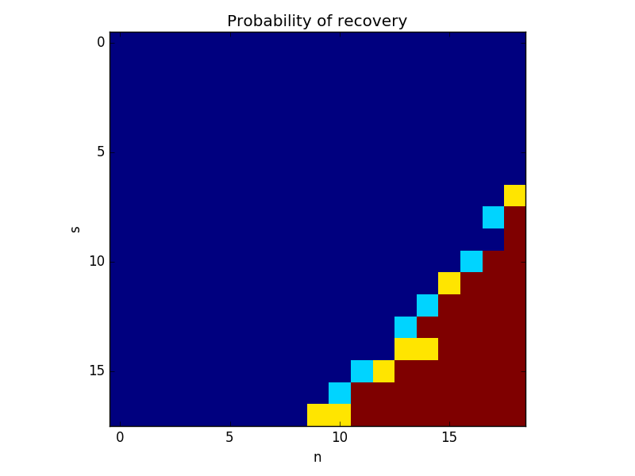

1 Money Ball: Who You Will Buy?
a)
data <- tbl_df(read.csv('MLB2008.csv')) data.train <- data[1:154, ] data.test <- data[155:dim(data)[1], ] 0
feature.names <- colnames(data)[6:length(data)] formula <- as.formula(paste('SALARY ~', paste(feature.names, collapse='+'))) rpart.model <- rpart(formula, data=data.train, method='anova') prp(rpart.model)
Figure 1: Tree generated by rpart
Now we try the pruning of the tree:
mse <- data.frame( prune=0, train=norm(predict(rpart.model) - data.train$SALARY, type="2"), test=norm(predict(rpart.model, data.test) - data.test$SALARY, type="2") ) for(prune in (1:10 / 10.)) { rpart.model.prune <- prune(rpart.model, cp=prune) mse <- rbind(mse, c( prune=prune, train=norm(predict(rpart.model.prune) - data.train$SALARY, type="2"), test=norm(predict(rpart.model.prune, data.test) - data.test$SALARY, type="2") )) } mse
| Prune Parameter | train | test |
| 0 | 36198240.8617805 | 72784943.1305674 |
| 0.1 | 44735392.6910594 | 74445712.3863091 |
| 0.2 | 44735392.6910594 | 74445712.3863091 |
| 0.3 | 52769875.8870473 | 73588157.3153948 |
| 0.4 | 52769875.8870473 | 73588157.3153948 |
| 0.5 | 52769875.8870473 | 73588157.3153948 |
| 0.6 | 52769875.8870473 | 73588157.3153948 |
| 0.7 | 52769875.8870473 | 73588157.3153948 |
| 0.8 | 52769875.8870473 | 73588157.3153948 |
| 0.9 | 52769875.8870473 | 73588157.3153948 |
| 1 | 52769875.8870473 | 73588157.3153948 |
The following plots the result:
ggplot(mse) + geom_point(aes(x = prune, y = train, color='train')) + geom_line(aes(x = prune, y = train, color='train')) + geom_point(aes(x = prune, y = test, color='test')) + xlab("B cp (Pruning Parameter)") + ylab("MSE")
Figure 2: MSE for traingin / test for different pruning parameters
b)
This section we try random forests.
mse.forest <- data.frame(B=integer(), train=numeric(), test=numeric()) for(B in seq(10, 100,by=10)) { randomForest.model <- randomForest(formula, data=data.train, ntree=B) mse.forest <- rbind(mse.forest, data.frame( B=B, train=norm(predict(randomForest.model, data.train) - data.train$SALARY, type="2"), test=norm(predict(randomForest.model, data.test) - data.test$SALARY, type="2") )) } 0
ggplot(mse.forest) + geom_point(aes(x = B, y = train, color='train')) + geom_line(aes(x = B, y = train, color='train')) + geom_point(aes(x = B, y = test, color='test')) + xlab("B") + ylab("MSE")

Figure 3: MSE for random Forest
c) Random forest tends to perform better than pruning in both training and testing settings. The best bagging parameter in hindsight is \(B = 20\). We use that for our prediction.
Bmax = 20 randomForest.model <- randomForest(formula, data=data.train, ntree=Bmax) pred <- predict(randomForest.model, data.test) most.undervalued.player <- which.max(pred - data.test$SALARY) as.character(most.undervalued.player) name <- as.character(data.test$PLAYER[most.undervalued.player]) real.salary <- data.test$SALARY[most.undervalued.player] predicted.salary <- pred[most.undervalued.player] most.undervalued.player data.frame(name=name, real.salary=real.salary, predicted.salary=round(predicted.salary))
| name | real salary | predicted salary |
| Kevin Youkilis | 3000000 | 10788613 |
Looking at the evolution of this player at the prospectus:
| Year | Team | Salary |
|---|---|---|
| 2008 | BAL | $455,000 |
| 2009 | BAL | $3,350,000 |
| 2010 | BAL | $7,100,000 |
| 2011 | BAL | $10,600,000 |
| 2012 | BAL | $12,350,000 |
| 2013 | BAL | $15,350,000 |
| 2014 | BAL | $15,350,000 |
| 2015 | ATL | $11,000,000 |
| 2016 | ATL | $11,000,000 |
| 2017 | ATL | $11,000,000 |
| 2018 | ATL | $11,000,000 |
We see that he was indeed very undervalued, the reason might be that he was just starting his career at 2008.
2 Tame Categorical Variables in Tree Regression
2.1.
\begin{align*} \sum_i (Y_i - f(X_i))^2 &= \sum_i Y_i^2 + \sum_s \sum_{X_i = s} f(s)^2 - 2 Y_i f(s) \\&= \sum_i Y_i^2 + \sum_s |\{X_i = s\}| [f(s)^2 - 2 \bar Y_s f(s)] \\&= \sum_i Y_i^2 + \sum_k \sum_{s \in L_k} |\{X_i = s\}| [\alpha_k^2 - 2 \bar Y_s \alpha_k] \\&= \sum_i Y_i^2 + \sum_k |L_k| (\alpha_k^2 - 2 avg(L_k) \alpha_k) \end{align*}It is clear that an optimal choice for \(\alpha_k\) would satisfy \(\alpha_k = avg(L_k)\) by minimizing a quadratic form. Using the assumption \(\bar Y_1 < \ldots <\bar Y_M\), and the fact that \(L_k \ne \emptyset\), if \(k \ne k'\) then \(avg(L_k) \ne avg(L_k')\)
Let's assume that \(u, w \in L_k\) and that \(v \in L_k'\).
By minimality of \(f\) we have that:
- \(f(u)^2 - 2\bar Y_u f(u)^2 \le {\alpha_k'}^2 - 2\bar Y_u {\alpha_k'}\), otherwise we take out \(u\) from \(L_k\) and put it in \(L_k'\) (\(L_k\) would still be non empty) which would contradict the minimality of \(f\). Using the fact that \(f(u) = \alpha_k\), \(\alpha_k^2 - 2\bar Y_u \alpha_k^2 \le {\alpha_k'}^2 - 2\bar Y_u {\alpha_k'}^2\)
- By the same argument, \(f(v)^2 - 2\bar Y_v f(v)^2 \le {\alpha_k}^2 - 2\bar Y_v {\alpha_k}^2\), or \(-{\alpha_k}^2 + 2\bar Y_v \alpha_k \le -{\alpha_k'}^2 + 2\bar Y_v {\alpha_k'}\).
- \(\alpha_k^2 - 2\bar Y_w \alpha_k \le {\alpha_k'}^2 - 2\bar Y_w {\alpha_k'}\)
Adding the second identity to the other two we get that: \(2 \alpha_k \underbrace{(\bar Y_v - \bar Y_u)}_{\ge 0} \le 2 \alpha_k' (\bar Y_v - \bar Y_u)\) \(2 \alpha_k \underbrace{(\bar Y_w - \bar Y_u)}_{\le 0} \le 2 \alpha_k'(\bar Y_w - \bar Y_u)\) Which proves that \(\alpha_k = \alpha_k'\), and so \(k = k'\)
2.2 \(K = 2\)
The set of partitions \((L_1, L_2)\) admits a one to one mapping to the set of functions \(\{0, 1\}^{\{1, \ldots M\}}\), so: \(\mathcal N_1 = 2^{M}\)
In this case, we know that \(L_1\) is of the form \(\{1, \ldots j\}\), so \(\mathcal N_2 = M\)
\(\frac{\mathcal N_2}{\mathcal N_1} = \frac{M}{2^M}\)
3 TODO Baggin and Random Forest
3.1 WLOS, take \(i = 1\).
For \(B \in \mathbb{N}^*\), and \(j \le B\), note
- \(V_j = (Z^*_1, \ldots Z^*_n)\) the \(B\) bootstraps samples from \(\{Z_2, \ldots Z_n\}\) used in \(\hat f_{CV}^{(1)} = \frac1n \sum_{j=1}^B \mathcal A(U_j )\), Where \(\mathcal A(U)\) is the algorithm that returns the tree corresponding the observation \(U\).
- \(U_j = (Z^*_1, \ldots Z^*_n)\) the \(B\) bootstraps samples from \(\{Z_1, \ldots Z_n\}\) used in \(\hat f_{OOB}^{(1)} =\frac1{|\{j, Z_1 \not \in V_j\}|} \sum_{j=1, Z_1 \not \in V_j} \mathcal A(V_j )\)
By the law of large numbers:
- \(f^{(1)}_{CV}(X_1) \rightarrow E[\mathcal A(V)(X_1) | X_1]\) where \(V \in \mathbb R^d\) is drawn uniformly from \(\{Z_2, \ldots, Z_n\}^B\)
\(f^{(1)}_{CV}(OOB) \rightarrow E[\mathcal A(U)(X_1) | X_1, Z_1 \not \in U]\) where \(U \in \mathbb R^d\) is drawn uniformly from \(\{Z_1, \ldots, Z_n\}^B\)
It is easy to see that \(Law(U| Z_1 \not \in U) \overset{d}{=} Law(V)\) because by symmetry of the \(Z_2, \ldots Z_n\}\), all bootstrapping samples are equally likely for \(U\) when \(Z_1 \not \in U\)
We have just proven that conditional on the \(Z_i\), \(\hat f_{OOB}^{(1)}(X_1) - \hat f_{CV}^{(1)}(X_1)\) converges a.s to 0 i. The result follow because the convergence in is preserved with respect to taking sums and products, and the fact that convergence almost sure \(\implies\) convergence in probability.
3.2
WLOS of generality we can assume that \(\mu = 0, \sigma=1\) by considering the rv \(\frac{X - \mu}{\sigma}\) and the fact that the correlation is insensitive to adding / multiplying.
- Bootstrap 1 defines an application \(\pi: \{1, \ldots n\} \rightarrow \{1, \ldots n\}\), where \(\bar X_1^* = \frac1n \sum_{i=1}^n X_{\pi(i)}\), and \(\pi\) is uniformly chosen among such applications.
Same way, Bootstrap 2 defines an application \(\sigma: \{1, \ldots n\} \rightarrow \{1, \ldots n\}\), independent from \(\pi\).
Then: \(Cor(\bar X_1^*, \bar X_2^*) = E[\frac1n \sum_{i=1}^n X_{\pi(i)} \frac1n \sum_{i=1}^n X_{\pi(i)}]\)
\(Var(\frac1B \sum_1^B \bar X_b^*) = \frac1{B^2} \sum Var(\bar X_b^*) + 2 \frac1{B^2} \sum_{a, b} Cov(\bar X_a^*, \bar X_b^*)\) By symetry of the \(\barX_b^*\): \(Var(\frac1B \sum_1^B \bar X_b^*) = \frac1{B} Var(\bar X_1^*) + 2 \frac{B^2 - B}{B^2} Cov(\bar X_1^*, \bar X_2^*) = \frac1{B} Var(\bar X_1^*) + 2 \frac{B - 1}{B} Cov(\bar X_1^*, \bar X_2^*)\)
4 Explore the Boundary of RIP Conditions
4.1 \(|\inner{Ax}{Ay}| \le \delta_{s+t} \norm{x}_2 \norm{y}_2 \iff |\inner{A\frac{x}{\norm{x}_2}}{A\frac{y}{\norm{y}_2}}| \le \delta_{s+t}\) Without loss of generality we assume that \(x\) and \(y\) have unit norm.
Since \(x\) and \(y\) have distinct support, \(\norm{x - y}_2^2 = \norm{x+y}_2^2 = \norm{x}_2^2 + \norm{y}_2^2\) and \(\norm{x + y}_0 = \norm{x-y}_0 = \norm{x}_0 + \norm{y}_0 \le s + t\) then \(\norm{x \pm y}_2^2 = 2\) and: \(2(1 - \delta_{s+t}) \le \norm{Ax \pm Ay}^2 \le 2(1 + \delta_{s+t})\), so:
\begin{align*} |\inner{Ax}{Ay}| &= \frac14 |\norm{Ax + Ay}^2 - \norm{Ax - Ay}^2)| \\&\le \frac14 | 2(1+\delta_{s+t}) - 2(1-\delta_{s+t})| \\&\le \delta_{s+t} \end{align*}Which ends the proof
4.2
step 1: Let \(\chi\) be set that satisfies those conditions with maximal size so that \(U = \cup_{x \in \chi} B(x, \sqrt \frac s2)\) where:
\[B(x, \sqrt \frac s2) = \{ y \in U : \norm{x-y}_2 \le \sqrt \frac s2 \} \subset \{ y \in U : \norm{x-y}_0 \le \frac s2 \}\]. So \(|U| \le \sum_{x \in \chi} |B(x, \sqrt \frac s2)| \le |\chi| |B(0, \sqrt \frac s2)|\)
But: \(|B(0, \sqrt \frac s2)| \le \#\{ z \in \{0, 1, -1\}^d \norm{x-z}_0 \le \frac s2\} \le {d \choose \frac s2} 3^{\frac s2}\), and: \(|U| = {d \choose s} 2^s\)
So
\begin{align*} .|\chi| &\ge (\frac43)^{\frac s2} \frac{{d \choose s}}{{d \choose \frac s2}} \\& \ge (\frac43)^{\frac s2} \frac{(s/2)! (d-s/2)!}{s! (d-s)!} \\& \ge (\frac43)^{\frac s2} \prod_{i=1}^{s/2} \frac{d-s+i}{s/2+1+i} \\& \ge (\frac43)^{\frac s2} (\frac{d-s/2}{s+1})^{\frac s2} \\& \ge (\frac43 \frac{d-s/2}{s+1})^{\frac s2} \end{align*}\(\frac43 \frac{d-s/2}{s+1} \ge \frac ds \iff s(4d- 2s) \ge 3 d(s+1) \iff 4ds - 2s^2 \ge 3ds + 3d \iff 2s^2 -ds + 3 d \ge 0 \iff 2s^2 \ge (s - 3)d\)
- step 2:
\(\norm{x-z}_0 \le 2s\) \[\norm{Ax - Az}_2^2 \ge (1- \delta_{2s}) \norm{x - z}_2^2 \ge (1 - \delta_{2s}) \frac{s}2 \ge \frac{s}4\] Which proves that the center of two balls are distant by more than twice their radiuses.
- step 3: For \(x \in U\), \(\norm{Ax}_2 \le (1 + \delta_s) \norm{x}_2^2 \le \frac 32 s\) So the balls of the centered at \(Ax\) where \(x \in \chi\) with raidus \(\sqrt{\frac{s}{16}}\) are contained in the ball centered at 0 with radius \((\sqrt{\frac 32} + \frac 14) \sqrt s\). Since such balls are disjoint, their total volume \(|\chi| Vol(\sqrt{\frac s{16}})\), where \(Vol(r)\) is the volume of the the ball of radius \(r\). We know that \(Vol(r) = r^n Vol(1)\), so: \[|\chi| (\frac{s}{16})^{n/2} Vol(1) \le Vol(1) (\sqrt{\frac 32} + \frac 14)^{n/2} s^{n/2}\] Taking the \(\log\) and using step 1: \[\frac{s}2 \log(\frac ds) \le \frac n2 \log(16 (\sqrt{\frac 32} + \frac 14)) \] So: \[Cs \log(\frac ds) \le n \]
4.3.
For computation reasons, we restrict the calculation to the case where \(d = 100\) instead of \(d = 1024\).
number_monte_carlo = 3; epsilon = 0.001; d = 100; L = 20; probabilities = zeros(L-1, L-1); for i=1:number_monte_carlo A = randn(d,d); for n=1:(L-1) t = floor((d/(L)) * (n-1)); X = 1/sqrt(t) * A(1:t,1:d); beta = randn(d, 1); for s=1:(L-1) r = floor((d/(L)) * (s-1)); beta(1:r, 1) = 0; Y = X * beta; probabilities(n, s) = probabilities(n, s) + (norm(l1eq_pd(0*beta, X, 0*X, Y) - beta) < epsilon); %probabilities(s, n) = probabilities(s, n) + norm(l1eq_pd(0*beta, X, 0*X, Y) - beta) ; end end end dlmwrite('mat.txt', probabilities / number_monte_carlo) ans = 0;
